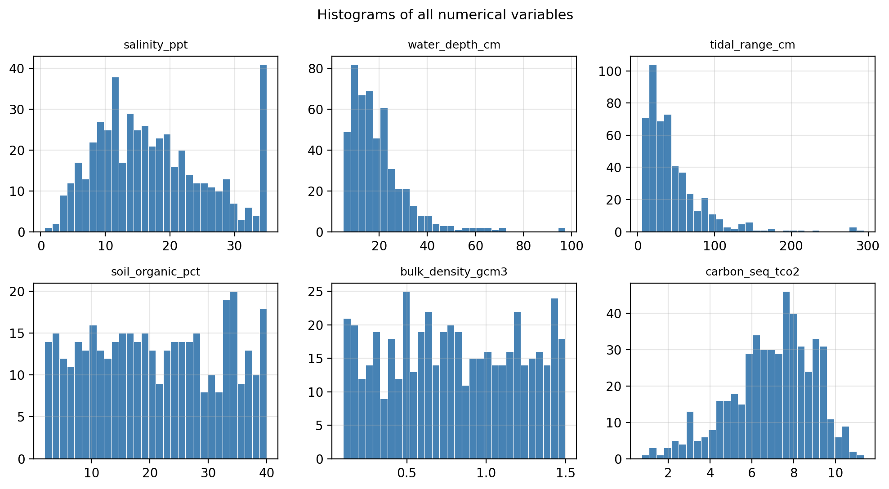
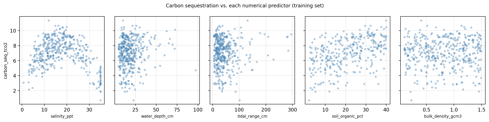

<class 'pandas.core.frame.DataFrame'>
RangeIndex: 500 entries, 0 to 499
Data columns (total 7 columns):
# Column Non-Null Count Dtype
--- ------ -------------- -----
0 salinity_ppt 500 non-null float64
1 water_depth_cm 500 non-null float64
2 tidal_range_cm 500 non-null float64
3 soil_organic_pct 400 non-null float64
4 bulk_density_gcm3 500 non-null float64
5 vegetation_type 500 non-null object
6 carbon_seq_tco2 500 non-null float64
dtypes: float64(6), object(1)
memory usage: 27.5+ KBEnd-to-end ML workflows
This lesson builds on, adapts and includes excerpts from the ML Project Checklist by Aurélien Géron publicly available through their handson-ml3 GitHub repository and on topics covered in Chapter 2: End-to-End Machine Learning Project from the Hands-On Machine Learning with Scikit-Learn, Keras & TensorFlow book. All example data is synthetic and was generated with the aid of Claude Code for the purpose of this lesson.
End-to-end workflows
Some core steps we should go through when implementing a ML project are:
- Understand the big picture
- Get the data and do a preliminary exploration
- Create a representative test set and lock it away
- Explore the train data to gain insights.
- Consider feature combinations
- Prepare train data for ML algorithms
- Try out different candidate models and estimate accuracy metrics with CV
- Go back to the drawing board if needed
- Select a model and fine-tune it
- Evaluate model on test set
🌟. Present your results!
We’ll dive deeper into some of these steps.
Understand the big picture
This step is all about understanding the framing of your project, you should ask your team questions such as:
- What is the objective of this application?
- How will the results be used?
- What are the current solutions or workarounds (if any)?
- How should you frame this problem? Classification/regression, supervised/unsupervised?
- How will performance be measured in the context of the problem?
- What ML performance metric will be used?
- What would be the minimum performance needed to reach the objective? Is it subject to some minimum performance on another metric?
- What are comparable problems? Are there experiences or tools we can reuse?
- Are experts in the domain subject available?
- What assumptions have been made so far?
- Are there any assumptions we need to verify?
For simplicity, for the rest of the section we will assume we are in the supervised scenario. But most steps also apply for unsupervised problems.
Get the data and do preliminary exploration
After you get the data, the next step is to open it and do some preliminary exploration. If you are working with tabular data, this can be done using pandas.DataFrame methods such as head(), info(), value_counts(), describe(), and hist(). The goal here is to get a high-level understanding of the variables in your dataset and answer questions such as:
- What is the data type of each variable?
- Which variables are categorical and which numerical?
- Which is the target variable?
- If the target variable is categorical, is there a class imbalance?
- Are there any variables with a lot of missing values?
- Do the distributions for each variable make sense?
- Do you understand how each variable was computed?
Create a representative test set and lock it away
We have previously discussed the importance of keeping the test set unseen and locked away to prevent data leakage (inadvertently tuning our model to the test set). The test set should only be used to assess the final performance of our model and not to influence any modeling decisions. This way, the test set it is truly representative of how the final model will perform on new, unseen data.
Typically, we set aside 20% or 30% of the data for testing. If your dataset is massive, a smaller percentage will probably be ok.
For the implementation, we usually use the function train_test_split from sklearn. Setting a random_state in this function ensures that we can always reproduce the same train-test split. For classification problems with imbalanced classes, you can pass the target vector to the stratify parameter to ensure class proportions are preserved in both splits.
Explore the train data to gain insights
The main goals for this step are to
- identify any transformations or cleaning that may be needed for the data,
- identify any promising predictors, and
- brainstorm if there are additional features we may want to compute.
For each variable, we should start by studying its characteristics:
- Name
- Type (categorical, int/float, bounded/unbounded, text, structured, etc.)
- % of missing values
- Noisiness and type of noise (outliers, rounding errors, etc.)
- Possibly useful for the task?
- Type of distribution
If there are not too many predictors, it can be useful to plot each one (or at least the most promising ones) against the target variable. This may uncover noise or errors in the data and illuminate whether data cleaning or transformation is needed. Plots may also show strong correlations that can give us an idea of which predictors might be best to keep.
In addition, we may also want to study the correlations between the predictors and target variables using the corr() method. Note that corr() only works for numerical variables. The correlation coefficient ranges from -1 to 1 and
- when it is close to 1, there is a strong positive linear correlation,
- when it is close to -1, there is a strong negative linear correlation.
- when it is close to 0, there is no linear correlation.
Remember the correlation here is linear! There may be other kinds of correlations that may not be captured.
Consider feature combinations
In this step we consider if there are any combinations of our predictors that could produce a more informative feature. This is not a “one and done” process: as we are developing the model, we may come back and reassess whether there are new features that are worth including. Whenever possible, make sure your decisions are backed up by domain expertise.
Prepare train data for ML algorithms
Before doing any transformation, recall that you should always keep a backup of your raw data.
Scrubbing
Having high quality training data is crucial. A few common issues in your observations may be:
- omitted values,
- duplicate observations,
- outliers.
Potential solutions include:
- remove the individual observations;
- replace the missing or outlier values to some value (Imputation: use zero, median, mean, KNN value, etc);
- get rid of the predictor, instead of modifying or deleting observations.
Scaling
Many ML models perform better when the features are on similar ranges. Since we are moving towards comparing performance from a few different models, it can be useful to scale the features. The target value does not need to be scaled.
There are different methods for scaling, we have generally been using standardization (StandardScaler in sklearn), where values are transformed by subtracting the mean (so standardized values always have zero mean) and dividing by the standard deviation (so standardized values have unit variance). It does not bound values to a specific range.
Linear scaling, clipping, and log-scaling are a few other ways you may want to scale your data. You can read a brief overview about each here.
One-hot encoding
This is a transformation applied to categorical predictors. Suppose you have a variable called biome with categories savanna, rainforest, grassland, and desert. Most ML algorithms prefer to work with numerical variables, so we can transform this variable into numbers.
An easy way would be to assign each with a number:
savanna-> 0rainforest-> 1grassland-> 2desert-> 3
One issue with this approach is that a model would treat the consecutive numbers as a numerical variable that contains information about the relative order between them. Instead, we create a binary feature per class: the new feature equals 1 when the observation belongs to the class, and 0 if the observation does not belong to the class. This process is called one-hot encoding.
For example, the one-hot encoding for the biome classes would look like:
| Observation | savanna |
rainforest |
grassland |
desert |
|---|---|---|---|---|
| biome = savanna | 1 | 0 | 0 | 0 |
| biome = rainforest | 0 | 1 | 0 | 0 |
| biome = grassland | 0 | 0 | 1 | 0 |
| biome = desert | 0 | 0 | 0 | 1 |
Note that for linear models, one of the encoded columns should be dropped to avoid perfect multicollinearity; OneHotEncoder handles this via the drop parameter.
When a categorical variable has many categories, the resulting one-hot matrix can be very large and contain mostly zeros (only one 1 per row). In those cases, sklearn stores the result in a memory-efficient sparse format that records only the positions of the 1s rather than all the zeros.
If a categorical variable has many possible values for its classes, then one-hot encoding will produce a large number of features. In this case, you can consider whether replacing some of it with a numerical alternative is more convenient.
Try out different candidate models and estimate accuracy metrics with CV
For real-world datasets, data pre-processing may take a long time! More so, when you are considering adding or removing features, you may need to go back to the previous steps and assess whether your dataset is robust, clean, and informative enough. But once you have a solid training set foundation, you can move on with the next steps:
- select a few candidate models that make sense with the problem set-up
- train them without spending too much time tweaking the hyperparameters (you may even want to use it with the default parameters)
- estimate your accuracy metrics with CV or explore ROC curves
Go back to the drawing board if needed
If, at this point, your results are bad, there are generally two things that could have gone wrong: “bad model” or “bad data”. Let’s see some of the challenges that you can encounter in these two categories.
Problems with the data
Consider if the poor performance of the model may be coming from a training set that may have some of these problems.
| Problem | Description | Potential solutions |
|---|---|---|
| Too small | More high-quality training data generally improves model performance, but it is not always easy or cheap to acquire. | Collect more high-quality training data. |
| Nonrepresentative | The training data must reflect the cases you want to generalize to. A small sample may have sampling noise; even a large sample can have sampling bias if it is not representative. | If possible, collect more data using better sampling strategies. |
| Poor quality | Too many outliers, errors, or missing values can prevent the algorithm from detecting the underlying pattern. | Remove outliers or correct errors; for observations with missing features, decide whether to drop those observations, drop the feature, or fill in the missing values. |
| Full of irrelevant features | Irrelevant features add noise that can prevent the model from working well. | Select the most informative features (feature selection); combine existing features into more useful ones (feature extraction); or gather new, more relevant data. |
Problems with models
Consider if the poor performance of the model may be coming from a model that may have some of these problems.
| Problem | Description | Potential solutions |
|---|---|---|
| Overfitting | The model detects patterns in noise, fitting the training data too closely and generalizing poorly to new data. | Choose a less flexible model; collect more training data; reduce noise in the training data; adjust hyperparameters to reduce model variance. |
| Underfitting | The model is too simple or rigid to capture the structure of the data. | Choose a more flexible model; add more informative features to the data; adjust hyperparameters to allow more model variance. |
Whatever the challenge is, you can go back and experiment with different feature combinations and models.
After model selection
Finally, after you have selected one or a couple of target models the steps to the finish line are:
- Select a model and fine-tune it.
Use cross-validation on the training set to search over hyperparameter combinations (e.g., with GridSearchCV ). All tuning decisions must be made using the training data only — the test set stays locked away!
- Evaluate on the test set.
Once hyperparameters are finalized, evaluate the model on the test set exactly once. This single number is your honest estimate of generalization performance. If it is much worse than your CV estimate, the model likely overfit during tuning.
🌟 Present your results.
Report both the metric value and its practical meaning in context: what does a MSE of X actually imply in the context of the problem? Also document the full pipeline, the choices made at each step, and any caveats about where the model may not generalize.
Exercise: Wetland carbon credit modeling
Note: the dataset and scenario below are synthetic and designed for pedagogical purposes. The variable relationships do not necessarily reflect real ecological dynamics.
A state environmental agency in Oregon is developing a wetland carbon credit program to incentivize private landowners to restore degraded coastal marshes. Under the program, landowners receive financial credits proportional to the carbon their restored wetlands sequester. Predictions of sequestered carbon directly affect how much money flows to each participant. The agency wants to build a model that predicts annual carbon sequestration from measurable site characteristics.
The agency’s field teams spent three seasons surveying 500 coastal wetland plots. For each plot they recorded:
salinity_ppt: mean porewater salinity (parts per thousand, ppt)water_depth_cm: mean water column depth (cm)tidal_range_cm: mean tidal range at the nearest gauge station (cm) (average difference in water level between high tide and low tide)soil_organic_pct: soil organic matter content (%)bulk_density_gcm3: soil bulk density (g/cm³)vegetation_type: dominant plant guild (cordgrass,bulrush,pickleweed, orsedges)
The response variable is carbon_seq_tco2, the measured annual carbon sequestration rate in metric tons of CO₂-equivalent per hectare per year (tCO₂-eq/ha/yr).
No existing predictive model is in place: credit values are currently assigned manually by ecologists, a process that is slow and inconsistent across reviewers.
TipExercise 1
Read the scenario above carefully. You are about to start working on this project. List any questions you would still need to answer before beginning data analysis and model development.
TipAnswer
The scenario is missing several key pieces of information about performance:
- What metric should be used? We need to confirm which metric the agency wants to optimize. For this regression problem we will use mean squared error (MSE), which penalizes larger prediction errors more heavily — an important property when errors have direct financial consequences.
- What is the minimum acceptable performance? A model must meet some accuracy threshold to be scientifically and legally defensible for assigning credits. Without a benchmark, we cannot know when the model is “good enough.”
- What is the current baseline performance? Manual assignment by ecologists is the current approach. We should know how consistent and accurate that process is, since it sets the bar the model needs to beat.
Another question worth considering:
- Is over- or under-prediction more costly? Over-predicting sequestration could mean issuing invalid credits (financial and reputational risk to the agency); under-predicting means landowners are under-compensated. This asymmetry may inform how we communicate and interpret model errors.
After consulting with the agency, your team decides that the MSE will be used to evaluate model performance and an MSE of at less than 9 (tCO₂-eq/ha/yr)² will be considered an improvement on the reviewer estimates.
We initiate data exploration. After loading the data, the table below shows the output for df.info().
TipExercise 2
Based on the outputs:
- How many numerical and how many categorical features are there?
- Are there any variables with a concerning amount of missing data? Which one(s), and roughly what percentage of observations are missing?
TipAnswer
There are 5 numerical features (
salinity_ppt,water_depth_cm,tidal_range_cm,soil_organic_pct,bulk_density_gcm3) and 1 categorical feature (vegetation_type, shown asobjectdtype indf.info()).soil_organic_pcthas approximately 100 missing values out of 500 rows (~20%), as visible from bothdf.info()(which shows 400 non-null entries) anddf.describe()(which reports a count of 400). This is a substantial proportion — it warrants a deliberate decision about how to handle it rather than a default fix.
TipExercise 3
Before fitting any models, a teammate opens the shared notebook and suggests the next step is to standardize the entire dataset so that all numerical features have zero mean and unit variance. What is the problem with this approach?
TipAnswer
This causes data leakage. Standardization requires computing the mean and standard deviation from the data. If those statistics are computed on the full dataset (including those that will become the held-out test rows), information from the test set contaminates the training process.
The correct procedure is:
- Split the data into train and test sets first.
- Compute the mean and standard deviation only on the training set.
- Apply those same values to scale both the training and test sets.
This ensures that the test set remains a clean simulation of data the model has never seen.
Your team creates a test set on the raw data and stores it away and decides the next step is to do further exploration for the training data. The plots below show the histograms for each of the predictors.

TipExercise 6
Looking at the distributions of the numerical predictors above, should you plan on scaling the data before fitting your models? Which predictors would most benefit from scaling, and why?
TipAnswer
Yes, scaling is needed. The predictors operate on very different numeric scales:
salinity_ppt: roughly 0.5–35,water_depth_cm: roughly 5–150,tidal_range_cm: roughly 5–300,soil_organic_pct: roughly 2–40bulk_density_gcm3: roughly 0.1–1.5
Without scaling, models sensitive to feature magnitude (e.g., SVMs, KNN) would give disproportionate weight to variables with larger numeric ranges like tidal_range_cm and water_depth_cm, regardless of their actual predictive value. Three of the five predictors are also right-skewed, meaning a handful of extreme observations could have an outsized influence. Standardization (zero mean, unit variance) addresses both issues.
Remember: the target variable carbon_seq_tco2 does not need to be scaled.

Next, the plots below show scatter plots of how the response changes with each predictor and a table of the correlation between each of these pairs.
| Correlation with target | |
|---|---|
| salinity_ppt | -0.236 |
| water_depth_cm | 0.115 |
| tidal_range_cm | 0.053 |
| soil_organic_pct | 0.456 |
| bulk_density_gcm3 | 0.010 |
TipExercise 4
Based on the scatter plots and correlation table above:
Which predictor(s) would you flag as candidates for removal because they appear to add noise without contributing useful signal? What evidence supports this?
Is there a predictor that has a low linear correlation with
carbon_seq_tco2but whose scatter plot suggests a meaningful non-linear relationship? Describe what you see.
TipAnswer
bulk_density_gcm3is the strongest candidate for removal. Its scatter plot shows no discernible pattern and its correlation with the target is near zero. This is consistent with a variable that possibly adds noise without contributing predictive information.salinity_pptappears to have a non-linear (inverted-U) relationship withcarbon_seq_tco2: sequestration is highest at intermediate, brackish salinity values (~15–20 ppt) and drops off at both very low and very high salinity. This reflects a well-known ecological pattern — freshwater conditions accelerate organic matter decomposition, while high salinity stresses plant productivity — but the symmetric shape means the positive and negative deviations cancel in a linear correlation, producing a near-zero coefficient. The scatter plot reveals what the correlation hides.
TipExercise 5
soil_organic_pct has approximately 20% missing values.
What are some questions you could ask to the environmental agency to better inform how to work with this data?
Consider the three approaches below for handling this. For each, briefly discuss at least one advantage and one disadvantage.
- Remove all observations where
soil_organic_pctis missing. - Impute missing values with the mean of the non-missing observations.
- Drop
soil_organic_pctas a feature entirely.
TipAnswer
Remove observations with missing values. Advantage: Simple to implement; keeps the feature in the model with no artificial values introduced. Disadvantage: Loses ~20% of training observations, reducing the effective sample size. If missingness is non-random (e.g., inaccessible plots may be in particularly remote or ecologically distinct areas), removing them could introduce sampling bias.
Impute with the mean. Advantage: Preserves all observations and keeps the feature available for modeling. Disadvantage: Replaces a meaningful measurement with an invented value, which can distort the distribution and reduce model accuracy, especially if the missing plots are systematically different from those with measurements.
Drop the feature entirely. Advantage: Completely sidesteps the missing data problem and avoids introducing imputed values. Disadvantage:
soil_organic_pctshows one of the stronger positive correlations with the target. Removing it discards real predictive signal and is likely to hurt model performance.
There is no universally correct answer here. In practice, a reasonable strategy is to start with mean imputation (option b) and compare model performance against the two other options using cross-validation.
The table below shows three observations from the training set, each from a different vegetation type:
| vegetation_type | salinity_ppt | water_depth_cm | tidal_range_cm | soil_organic_pct | bulk_density_gcm3 | |
|---|---|---|---|---|---|---|
| 1 | cordgrass | 10.06 | 29.3 | 139.7 | 16.8 | 0.645 |
| 2 | sedges | 33.50 | 16.1 | 19.7 | 32.1 | 0.791 |
| 3 | pickleweed | 21.34 | 12.6 | 47.5 | 10.6 | 1.033 |
TipExercise 7
One-hot encode the vegetation_type column for the three observations shown above. Write out what the encoded columns would look like. What are the names of the new columns, and what value (0 or 1) does each observation get in each column?
TipAnswer
One-hot encoding vegetation_type creates one binary column per category. With four categories in the full dataset (bulrush, cordgrass, pickleweed, sedges), the encoding produces four new columns, typically named in alphabetical order:
| obs | vegetation_type |
veg_type_bulrush |
veg_type_cordgrass |
veg_type_pickleweed |
veg_type_sedges |
|---|---|---|---|---|---|
| 1 | cordgrass | 0 | 1 | 0 | 0 |
| 2 | sedges | 0 | 0 | 0 | 1 |
| 3 | pickleweed | 0 | 0 | 1 | 0 |
Each row has exactly one 1 and three 0s. The original vegetation_type column is dropped and replaced by these four binary columns. Note that bulrush does not appear in this particular subset, but the column is still created.
TipExercise 8
Your team has cleaned and prepared the training data and is ready to start fitting models. Looking back at the wetland carbon sequestration problem, brainstorm at least three candidate models you could try as a starting point. For each, briefly justify why it is a reasonable choice for this problem.
TipAnswer
Any of the following would be reasonable starting points:
- Linear regression: a natural first baseline for any regression problem. It is fast to fit, easy to interpret, and its performance sets a floor. If more complex models cannot beat it, that is a signal to revisit the data rather than the model.
- K-nearest neighbors (KNN) regression: makes no assumption about the functional form of the relationship between predictors and target, so it can capture non-linear patterns like the quadratic salinity effect without any feature engineering.
- Decision tree / random forest regression: handles non-linearities and interactions automatically, works well with mixed numerical and categorical features, and provides feature importances — useful here because the agency may want to know which site characteristics drive sequestration.
In practice, you would fit all candidates with default hyperparameters first and compare their cross-validated MSE on the training set before investing time in tuning any single model.